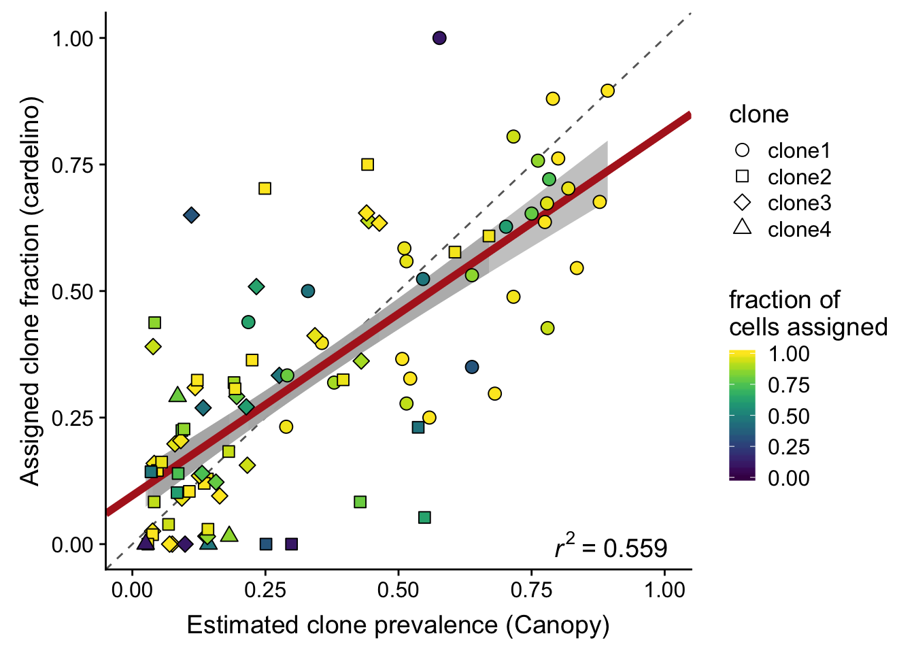
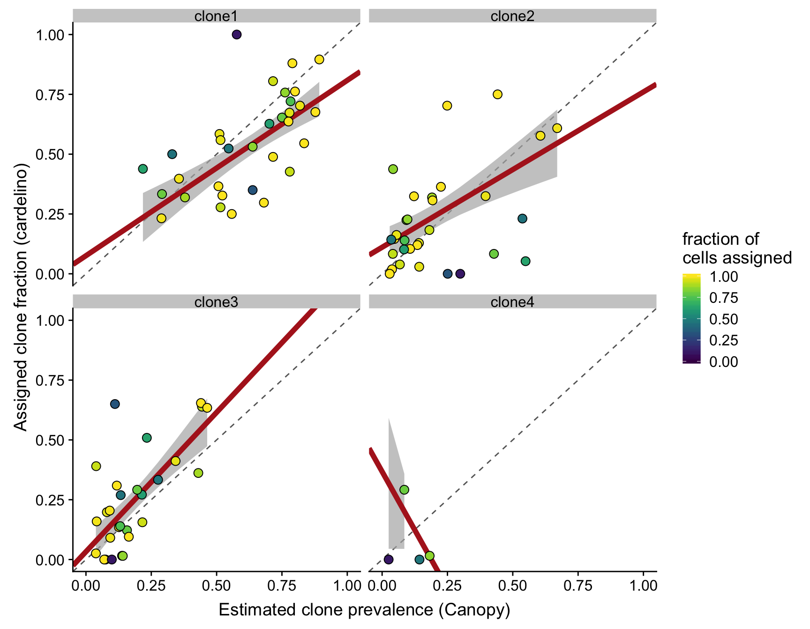
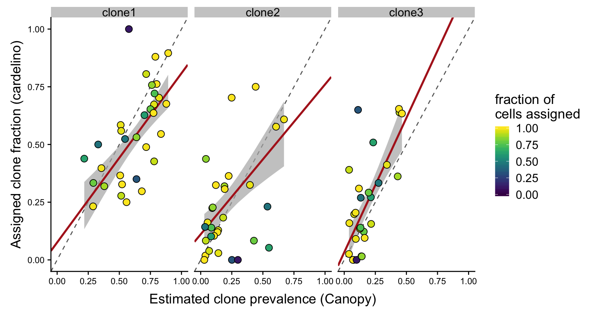
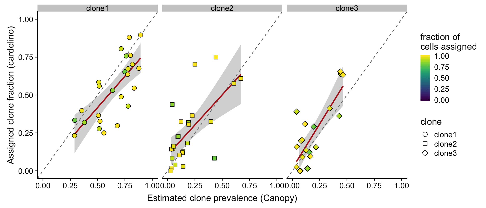

Last updated: 2018-08-17
workflowr checks: (Click a bullet for more information) ✔ R Markdown file: up-to-date
Great! Since the R Markdown file has been committed to the Git repository, you know the exact version of the code that produced these results.
✔ Environment: empty
Great job! The global environment was empty. Objects defined in the global environment can affect the analysis in your R Markdown file in unknown ways. For reproduciblity it’s best to always run the code in an empty environment.
✔ Seed:
set.seed(20180807)
The command set.seed(20180807) was run prior to running the code in the R Markdown file. Setting a seed ensures that any results that rely on randomness, e.g. subsampling or permutations, are reproducible.
✔ Session information: recorded
Great job! Recording the operating system, R version, and package versions is critical for reproducibility.
✔ Repository version: a847774
wflow_publish or wflow_git_commit). workflowr only checks the R Markdown file, but you know if there are other scripts or data files that it depends on. Below is the status of the Git repository when the results were generated:
Ignored files:
Ignored: .DS_Store
Ignored: .Rproj.user/
Ignored: output/donor_specific/
Untracked files:
Untracked: analysis/analysis_for_garx.Rmd
Untracked: analysis/analysis_for_joxm.Rmd
Untracked: analysis/differential_expression.Rmd
Untracked: data/canopy/
Untracked: data/cell_assignment/
Untracked: data/de_analysis_FTv62/
Untracked: data/donor_info_070818.txt
Untracked: data/donor_neutrality.tsv
Untracked: data/fdr10.annot.txt.gz
Untracked: data/high-vs-low-exomes.v62.ft.alldonors-filt_lenient.all_filt_sites.vep_most_severe_csq.txt
Untracked: data/high-vs-low-exomes.v62.ft.filt_lenient-alldonors.txt.gz
Untracked: data/human_H_v5p2.rdata
Untracked: data/human_c2_v5p2.rdata
Untracked: data/human_c6_v5p2.rdata
Untracked: data/sce_merged_donors_cardelino_donorid_all_qc_filt.rds
Untracked: data/sce_merged_donors_cardelino_donorid_all_with_qc_labels.rds
Untracked: data/sce_merged_donors_cardelino_donorid_unstim_qc_filt.rds
Untracked: data/sces/
Untracked: data/simulations/
Untracked: data/variance_components/
Untracked: docs/figure/
Untracked: figures/
Untracked: output/garx/
Untracked: output/nvars_by_category_by_donor.tsv
Untracked: output/nvars_by_category_by_line.tsv
Untracked: output/variance_components/
| File | Version | Author | Date | Message |
|---|---|---|---|---|
| Rmd | a847774 | davismcc | 2018-08-17 | Using “line” instead of “donor” |
| Rmd | 1b44d28 | davismcc | 2018-08-13 | Adding simulation analysis file. |
| Rmd | 1cbadbd | davismcc | 2018-08-10 | Updating analyses. |
| Rmd | 2531565 | davismcc | 2018-08-08 | Tweaking clone prevalences |
| Rmd | 7397e00 | davismcc | 2018-08-08 | Updating stylez and tweaking Rmds |
| Rmd | 5a9a5ba | davismcc | 2018-08-08 | Adding cowplot |
| Rmd | 2a45547 | davismcc | 2018-08-08 | Adding viridis library |
| Rmd | d6b3b74 | davismcc | 2018-08-08 | Adding clone prevalence analysis |
knitr::opts_chunk$set(echo = TRUE)
library(tidyverse)
library(viridis)
library(cowplot)Load the Canopy clone inference results and the cell assignment results from cardelino for 32 donor fibroblast cell lines.
params <- list()
params$callset <- "filt_lenient.cell_coverage_sites"
fls <- list.files("data/sces")
fls <- fls[grepl(params$callset, fls)]
lines <- gsub(".*ce_([a-z]+)_.*", "\\1", fls)
cell_assign_list <- list()
for (don in lines) {
cell_assign_list[[don]] <- readRDS(file.path("data/cell_assignment",
paste0("cardelino_results.", don, ".", params$callset, ".rds")))
cat(paste("reading", don, "\n"))
}reading euts
reading fawm
reading feec
reading fikt
reading garx
reading gesg
reading heja
reading hipn
reading ieki
reading joxm
reading kuco
reading laey
reading lexy
reading naju
reading nusw
reading oaaz
reading oilg
reading pipw
reading puie
reading qayj
reading qolg
reading qonc
reading rozh
reading sehl
reading ualf
reading vass
reading vils
reading vuna
reading wahn
reading wetu
reading xugn
reading zoxy canopy_list <- list()
prev_list <- list()
for (don in lines) {
tmp_df <- data_frame(
line = don,
clone = rownames(cell_assign_list[[don]]$tree$P),
prev_canopy = cell_assign_list[[don]]$tree$P[, 1],
prev_cardelino = NA,
n_cells = length(cell_assign_list[[don]]$clone_assigned),
n_assigned = sum(cell_assign_list[[don]]$clone_assigned != "unassigned"),
prop_assigned = n_assigned / n_cells
)
for (i in seq_len(nrow(tmp_df))) {
tmp_df$prev_cardelino[i] <- (sum(
cell_assign_list[[don]]$clone_assigned == tmp_df$clone[i]) /
tmp_df$n_assigned[i])
}
prev_list[[don]] <- tmp_df
}
df_prev <- do.call("rbind", prev_list)
lm_eqn <- function(df) {
m <- lm(prev_cardelino ~ prev_canopy, df);
eq <- substitute(italic(r)^2~"="~r2,
list(a = format(coef(m)[1], digits = 2),
b = format(coef(m)[2], digits = 2),
r2 = format(summary(m)$r.squared, digits = 3)))
as.character(as.expression(eq));
}
## Fit weighted regressions
fits <- df_prev %>%
group_by(clone) %>%
do(fit = lm(prev_cardelino ~ prev_canopy, weights = prop_assigned, data = .))
fits_1grp <- df_prev %>%
do(fit = lm(prev_cardelino ~ prev_canopy, weights = prop_assigned, data = .))
le_lin_fit <- function(dat) {
the_fit <- lm(prev_cardelino ~ prev_canopy, weights = prop_assigned, dat)
setNames(data.frame(t(coef(the_fit))), c("x0", "x1"))
}
fits_me <- df_prev %>%
group_by(clone) %>%
do(le_lin_fit(.))
fits_me_1grp <- df_prev %>%
do(le_lin_fit(.))Plot the estimated clone fractions from the cells assigned to a clone by cardelino against the estimated clone fractions from Canopy.
fits_1grp %>%
broom::augment(fit) %>%
inner_join(., df_prev) %>%
ggplot(aes(x = prev_canopy, y = prev_cardelino, shape = clone,
fill = prop_assigned)) +
geom_abline(slope = 1, intercept = 0, colour = "gray40", linetype = 2) +
geom_ribbon(aes(ymin = .fitted - 1.645 * .se.fit, ymax = .fitted + 1.645 * .se.fit),
fill = "gray70", alpha = 0.7) +
geom_abline(aes(intercept = x0, slope = x1),
data = fits_me_1grp,
colour = "firebrick", size = 2) +
geom_point(size = 3) +
xlim(0, 1) + ylim(0, 1) +
geom_text(x = 0.9, y = 0, colour = "black", label = lm_eqn(df_prev),
size = 5, parse = TRUE, data = df_prev[1,]) +
scale_fill_viridis(name = "fraction of\ncells assigned", limits = c(0, 1)) +
scale_shape_manual(values = 21:25) +
xlab("Estimated clone prevalence (Canopy)") +
ylab("Assigned clone fraction (cardelino)")Joining, by = c("prev_cardelino", "prev_canopy")
ggsave("figures/clone_prevalences/clone_prev_scatter.png",
height = 5, width = 7)
ggsave("figures/clone_prevalences/clone_prev_scatter.pdf",
height = 5, width = 7)We can also look at the same plot as above, but now faceted by the different clones.
fits %>%
broom::augment(fit) %>%
inner_join(., df_prev) %>%
ggplot(aes(x = prev_canopy, y = prev_cardelino)) +
geom_abline(slope = 1, intercept = 0, colour = "gray40", linetype = 2) +
geom_ribbon(aes(ymin = .fitted - 1.645 * .se.fit, ymax = .fitted + 1.645 * .se.fit),
fill = "gray70", alpha = 0.7) +
geom_abline(aes(intercept = x0, slope = x1),
data = fits_me,
colour = "firebrick", size = 2) +
geom_point(aes(fill = prop_assigned), size = 3, shape = 21) +
xlim(0, 1) + ylim(0, 1) +
facet_wrap(~clone) +
scale_fill_viridis(name = "fraction of\ncells assigned", limits = c(0, 1)) +
scale_shape_manual(values = 21:25) +
xlab("Estimated clone prevalence (Canopy)") +
ylab("Assigned clone fraction (cardelino)")Joining, by = c("clone", "prev_cardelino", "prev_canopy")
ggsave("figures/clone_prevalences/clone_prev_scatter_facet_clone.png",
height = 7, width = 9)
ggsave("figures/clone_prevalences/clone_prev_scatter_facet_clone.pdf",
height = 7, width = 9)Since there are so few lines with four clones we can also make a version of the figure above with just clone1, clone2 and clone3 and fitted a weighted regression line, with points weighted by the fraction of cells assigned for the line.
fits %>%
broom::augment(fit) %>%
inner_join(., df_prev) %>%
dplyr::filter(clone != "clone4") %>%
ggplot(aes(x = prev_canopy, y = prev_cardelino, fill = prop_assigned)) +
geom_abline(slope = 1, intercept = 0, colour = "gray40", linetype = 2) +
geom_ribbon(aes(ymin = .fitted - 1.645 * .se.fit, ymax = .fitted + 1.645 * .se.fit),
fill = "gray70", alpha = 0.7) +
geom_abline(aes(intercept = x0, slope = x1),
data = dplyr::filter(fits_me, clone != "clone4"),
colour = "firebrick", size = 1) +
geom_point(size = 3, shape = 21) +
xlim(0, 1) + ylim(0, 1) +
facet_wrap(~clone, nrow = 1) +
scale_fill_viridis(name = "fraction of\ncells assigned", limits = c(0, 1)) +
scale_shape_manual(values = 21:25) +
xlab("Estimated clone prevalence (Canopy)") +
ylab("Assigned clone fraction (cardelino)") +
theme(axis.text = element_text(size = 9))Joining, by = c("clone", "prev_cardelino", "prev_canopy")
ggsave("figures/clone_prevalences/clone_prev_scatter_facet_clone_no_clone4.png",
height = 4.5, width = 8.5)
ggsave("figures/clone_prevalences/clone_prev_scatter_facet_clone_no_clone4.pdf",
height = 4.5, width = 8.5)Also look at what happens if we filter out lines that have fewer than 75% of cells assigned (25 lines).
df_prev %>%
dplyr::filter(clone != "clone4", prop_assigned > 0.75) %>%
ggplot(aes(x = prev_canopy, y = prev_cardelino, shape = clone,
fill = prop_assigned)) +
geom_abline(slope = 1, intercept = 0, colour = "gray40", linetype = 2) +
geom_smooth(aes(group = 1), method = "lm", colour = "firebrick") +
geom_point(size = 3) +
xlim(0, 1) + ylim(0, 1) +
facet_wrap(~clone, nrow = 1) +
scale_fill_viridis(name = "fraction of\ncells assigned", limits = c(0, 1)) +
scale_shape_manual(values = 21:25) +
xlab("Estimated clone prevalence (Canopy)") +
ylab("Assigned clone fraction (cardelino)")
ggsave("figures/clone_prevalences/clone_prev_scatter_facet_clone_no_clone4_75pctassigned.png",
height = 4.5, width = 10.5)
ggsave("figures/clone_prevalences/clone_prev_scatter_facet_clone_no_clone4_75pctassigned.pdf",
height = 4.5, width = 10.5)devtools::session_info()Session info ------------------------------------------------------------- setting value
version R version 3.5.1 (2018-07-02)
system x86_64, darwin15.6.0
ui X11
language (EN)
collate en_GB.UTF-8
tz Europe/London
date 2018-08-17 Packages ----------------------------------------------------------------- package * version date source
assertthat 0.2.0 2017-04-11 CRAN (R 3.5.0)
backports 1.1.2 2017-12-13 CRAN (R 3.5.0)
base * 3.5.1 2018-07-05 local
bindr 0.1.1 2018-03-13 CRAN (R 3.5.0)
bindrcpp * 0.2.2 2018-03-29 CRAN (R 3.5.0)
broom 0.5.0 2018-07-17 CRAN (R 3.5.0)
cellranger 1.1.0 2016-07-27 CRAN (R 3.5.0)
cli 1.0.0 2017-11-05 CRAN (R 3.5.0)
colorspace 1.3-2 2016-12-14 CRAN (R 3.5.0)
compiler 3.5.1 2018-07-05 local
cowplot * 0.9.3 2018-07-15 CRAN (R 3.5.0)
crayon 1.3.4 2017-09-16 CRAN (R 3.5.0)
datasets * 3.5.1 2018-07-05 local
devtools 1.13.6 2018-06-27 CRAN (R 3.5.0)
digest 0.6.15 2018-01-28 CRAN (R 3.5.0)
dplyr * 0.7.6 2018-06-29 CRAN (R 3.5.1)
evaluate 0.11 2018-07-17 CRAN (R 3.5.0)
forcats * 0.3.0 2018-02-19 CRAN (R 3.5.0)
ggplot2 * 3.0.0 2018-07-03 CRAN (R 3.5.0)
git2r 0.23.0 2018-07-17 CRAN (R 3.5.0)
glue 1.3.0 2018-07-17 CRAN (R 3.5.0)
graphics * 3.5.1 2018-07-05 local
grDevices * 3.5.1 2018-07-05 local
grid 3.5.1 2018-07-05 local
gridExtra 2.3 2017-09-09 CRAN (R 3.5.0)
gtable 0.2.0 2016-02-26 CRAN (R 3.5.0)
haven 1.1.2 2018-06-27 CRAN (R 3.5.0)
hms 0.4.2 2018-03-10 CRAN (R 3.5.0)
htmltools 0.3.6 2017-04-28 CRAN (R 3.5.0)
httr 1.3.1 2017-08-20 CRAN (R 3.5.0)
jsonlite 1.5 2017-06-01 CRAN (R 3.5.0)
knitr 1.20 2018-02-20 CRAN (R 3.5.0)
labeling 0.3 2014-08-23 CRAN (R 3.5.0)
lattice 0.20-35 2017-03-25 CRAN (R 3.5.1)
lazyeval 0.2.1 2017-10-29 CRAN (R 3.5.0)
lubridate 1.7.4 2018-04-11 CRAN (R 3.5.0)
magrittr 1.5 2014-11-22 CRAN (R 3.5.0)
memoise 1.1.0 2017-04-21 CRAN (R 3.5.0)
methods * 3.5.1 2018-07-05 local
modelr 0.1.2 2018-05-11 CRAN (R 3.5.0)
munsell 0.5.0 2018-06-12 CRAN (R 3.5.0)
nlme 3.1-137 2018-04-07 CRAN (R 3.5.1)
pillar 1.3.0 2018-07-14 CRAN (R 3.5.0)
pkgconfig 2.0.1 2017-03-21 CRAN (R 3.5.0)
plyr 1.8.4 2016-06-08 CRAN (R 3.5.0)
purrr * 0.2.5 2018-05-29 CRAN (R 3.5.0)
R.methodsS3 1.7.1 2016-02-16 CRAN (R 3.5.0)
R.oo 1.22.0 2018-04-22 CRAN (R 3.5.0)
R.utils 2.6.0 2017-11-05 CRAN (R 3.5.0)
R6 2.2.2 2017-06-17 CRAN (R 3.5.0)
Rcpp 0.12.18 2018-07-23 CRAN (R 3.5.0)
readr * 1.1.1 2017-05-16 CRAN (R 3.5.0)
readxl 1.1.0 2018-04-20 CRAN (R 3.5.0)
rlang 0.2.1 2018-05-30 CRAN (R 3.5.0)
rmarkdown 1.10 2018-06-11 CRAN (R 3.5.0)
rprojroot 1.3-2 2018-01-03 CRAN (R 3.5.0)
rstudioapi 0.7 2017-09-07 CRAN (R 3.5.0)
rvest 0.3.2 2016-06-17 CRAN (R 3.5.0)
scales 0.5.0 2017-08-24 CRAN (R 3.5.0)
stats * 3.5.1 2018-07-05 local
stringi 1.2.4 2018-07-20 CRAN (R 3.5.0)
stringr * 1.3.1 2018-05-10 CRAN (R 3.5.0)
tibble * 1.4.2 2018-01-22 CRAN (R 3.5.0)
tidyr * 0.8.1 2018-05-18 CRAN (R 3.5.0)
tidyselect 0.2.4 2018-02-26 CRAN (R 3.5.0)
tidyverse * 1.2.1 2017-11-14 CRAN (R 3.5.0)
tools 3.5.1 2018-07-05 local
utils * 3.5.1 2018-07-05 local
viridis * 0.5.1 2018-03-29 CRAN (R 3.5.0)
viridisLite * 0.3.0 2018-02-01 CRAN (R 3.5.0)
whisker 0.3-2 2013-04-28 CRAN (R 3.5.0)
withr 2.1.2 2018-03-15 CRAN (R 3.5.0)
workflowr 1.1.1 2018-07-06 CRAN (R 3.5.0)
xml2 1.2.0 2018-01-24 CRAN (R 3.5.0)
yaml 2.2.0 2018-07-25 CRAN (R 3.5.1)This reproducible R Markdown analysis was created with workflowr 1.1.1